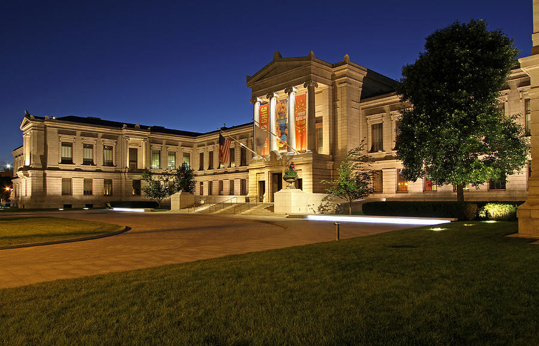

Museum of Fine Arts (MFA)
The Museum of Fine Arts in Boston is one of the largest museums in the U.S., housing the second largest permanent museum collection in the Western Hemisphere. The museum is affiliated with the School of the Museum of Fine Arts and the sister museum, the Nagoya/Boston Museum of Fine Arts, in Nagoya, Japan. The Museum of Fine Arts offers a fine permanent collection from the masters of American painting as well as a vast selection of works of art from all important periods; it also hosts special exhibits on loan from around the world.
The Museum of Fine Arts in Boston is a world-renowned institution housing one of the best art collections in the world. The collection encompasses more than 450,000 individual pieces dating from ancient Egypt until the 20th century. The family-friendly museum has several hands-on art programs geared toward children to make their visit fun and exciting. The collection includes Egyptian artifacts along with French impressionist and post-impressionist works by Gauguin, Renoir and Manet as well as Van Gogh, Monet and Cezanne. There is an impressive array of Chinese and Japanese works.
Hours of Operation & Admission: The MFA is located on Huntington Avenue. Opening at 10 a.m. each day, the museum closes at 5 p.m. Saturday through Tuesday and remains open until 10 p.m. Wednesday through Friday. The MFA is closed on Patriot’s Day, which is the third Monday in April, July 4, Thanksgiving, Christmas and New Year’s Day. Crowds are most prevalent on holidays and school vacation weeks. Children under six are admitted free of charge. Those aged 7 to 17 receive complimentary admission during non-school hours. You are asked to stay at least 1 foot from the artwork and to only eat and drink in designated areas.
Getting to the Museum: To reach the museum, hop aboard Old Town Trolley for a sightseeing adventure around Boston. Get off at Stop #10 to visit the museum and see everything else Beantown has to offer as you travel to 18 other stops. Situated along multiple bus routes, the MFA is also easily accessible by the T, Boston’s subway system. You can use the Museum of Fine Art stop on the Green Line or the Ruggles stop on the Orange line. Self and valet parking options are limited near the museum.